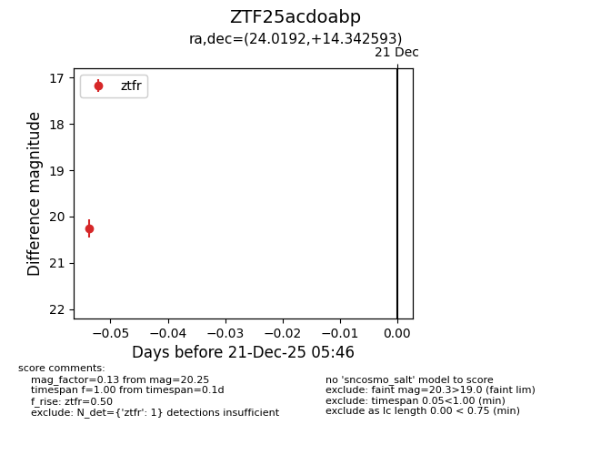
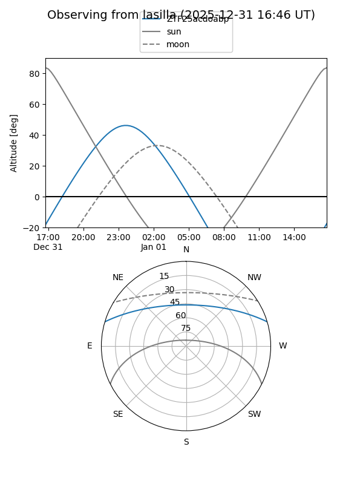
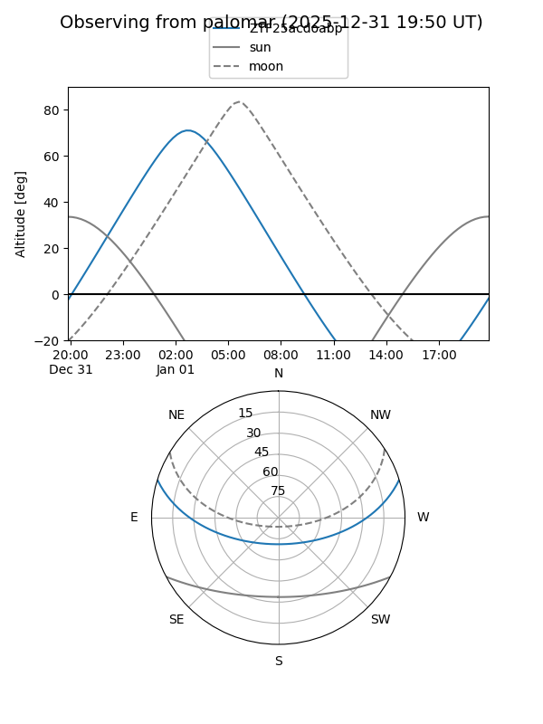

ZTF25acdoabp
Target ZTF25acdoabp at 2026-01-09 12:49
Aliases and brokers:
FINK: link
Lasair: link
ALeRCE: link
alt names
ZTF25acdoabp (ztf,fink_ztf)
Coordinates:
equatorial (ra, dec) = 24.0192,+14.34259
equatorial (HMS+DMS) = 01:36:04.61,+14:20:33.33
galactic (l, b) = (138.9331,-47.13755)
Flags:
Photometry:
last ztfr=20.25
1 ztfr detections
Lightcurve

Visibility


Additional plots